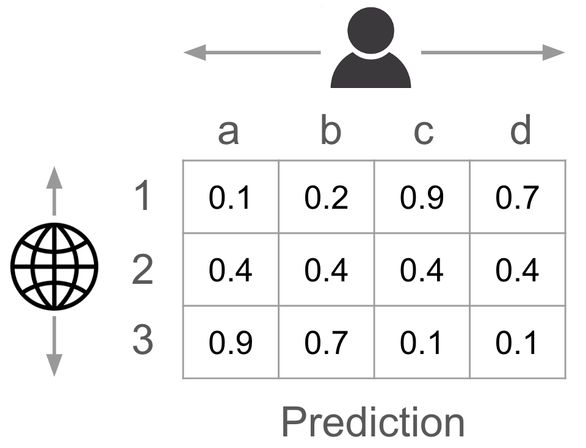

Learning Loss Functions for Predict-then-Optimize
A (hopefully) approachable answer to the question “So what is your PhD about?”
 An overview of our approach
An overview of our approach
Introduction
PtO is a framework for using machine learning to perform decision-making under uncertainty. As the name suggests, it proceeds in two steps—first, you make predictions about the uncertain quantities of interest and then, second, you make the required decisions assuming that these predictions are accurate. However, these decisions are only optimal if the input predictions are accurate. To evaluate the quality of our decisions for a given prediction, we check how well they would perform on the ground truth values of the quantities of interest (from the dataset) as opposed to the predictions. Let’s use an example to make all these different steps in the PtO pipeline concrete.
An Example
Imagine that you are an advertiser and you want to decide which websites to advertise on. One way in which you could use ML to solve this problem would be as follows.
- Predict Step: First, you use some features (e.g., website metadata) to predict the probability of a certain type of user clicking on your ad if it was advertised on a given website. You repeat this for all user types (e.g., demographic groups) and websites, resulting in the creation of a table like the one below, in which each row corresponds to a choice of website, and each column corresponds to a user type.

- Optimize Step: Given these predictions, you use them to parameterize an optimization problem that assumes that these predictions are accurate and creates a decision that would maximize your desired objective. Perhaps, the goal is to choose the subset of websites to advertise on in order to maximize the number of user types who click on the ad at least once. This decision can be made by solving the submodular maximization problem below, in which ŷ are predictions from the table and z is the probability of choosing a given website.
- Evaluate Step: Finally, you evaluate the quality of your produced decision, say the decision to advertise on websites 1 and 3 (and not 2). To do this, you calculate the expected number of user types that would have clicked on the ad at least once using the historical data’s ground truth probabilities (not the predictions!). We call this value of 0.89 below the “decision quality” of our predictions.
Technical Challenge
The example above describes one way in which ML, and this PtO framework specifically, can be used to perform decision-making under uncertainty, but what is the technical challenge here? The naive way in which to use ML for PtO would be to first train some predictive model to maximize predictive accuracy, and then, later deploy it to make decisions. However, as you can see in the figure below, this is suboptimal because what the model was trained for and what it’s being used for are different things.
Consequently, the big question in this PtO setting is about how to learn predictive models that maximize the downstream “decision quality” for the downstream task of interest. We call this paradigm “Decision-Focused Learning”, and in practice, we find that it is particularly relevant for the kinds of small data + small model settings that are prevalent in AI for Social Impact.
Past Work
Conceptually, the easiest way to learn decision-focused predictive models is to combine the prediction and decision-making steps into a single end-to-end differentiable pipeline, e.g., as in Wilder, et al. [3]:
However, this has a couple of problems:
- Differentiating through optimization problems is non-trivial, especially for optimization tasks in which the decisions are discrete (e.g., in the advertising example where you can only decide to either choose a website or not). This is because, in such problems, the gradients of the optimal decision with respect to the input parameters are not defined, and so creating an end-to-end pipeline requires coming up with a differentiable “surrogate optimization problem”. As a consequence, it can be difficult to use DFL for a new decision-making task.
- Moreover, even if we could differentiate through the decision-making step, a single gradient update requires solving an optimization problem and subsequently differentiating through it. This can be computationally expensive, especially for complex optimization problems.
Instead, in a series of papers [1-2] we propose an alternate strategy for performing DFL that does not require differentiable optimization but instead aims to distill the task-specific information into a “decision loss”. In the remainder of this article, I describe this approach in more detail and hope to convince you of its utility.
Learning A Decision Loss
What is a Decision Loss?
One way in which we can interpret the PtO framework from a prediction point of view, is to see the Optimize + Evaluate steps as defining a loss function, i.e., a mapping from predictions and true labels to decision quality. As a result, we can see these two steps as inducing a “decision loss” that provides information about how good a given prediction is in terms of its decision quality.
However, changing the framing does not solve any of the differentiability or efficiency challenges that we’ve described above. The key insight is that, rather than evaluating this decision loss exactly in each forward and backward pass, we instead learn a surrogate for the decision loss that is cheap to evaluate and has nice properties, e.g., convexity and consistency. Broadly, we learn this decision loss by first generating a supervised learning dataset using which we can learn a loss function, and next fitting a loss function with nice properties to this dataset. We describe the approach in more detail below.
Meta-Algorithm for Learning a Decision Loss
Concretely, the three steps involved in learning a loss function are as follows:
- (Step 1) Generate Inputs: The first step in creating a dataset for supervised learning is to generate the inputs. For the decision loss, there are two inputs—the predicted parameters and the true parameters. While the true parameters are assumed to be part of the PtO dataset, the predictions are unknown at the time of generating a loss function. As a result, this first step involves generating realistic samples of what such predictions could be: \

In [1], we use a simple “localness” heuristic that uses the assumption that your model will do reasonably well at predicting the true parameters and, as a result, you can model your predictions as the true parameters + Gaussian noise.
- (Step 2) Generate Outputs: Given different samples of possible predictions, the next step is to run the Optimize + Evaluate steps of the PtO pipeline in order to generate the decision qualities that correspond to all of these different input predictions.
Note that this does not require being able to differentiate through the optimization problem, just the ability to solve it. The combination of these inputs and outputs generates a supervised learning dataset.
- (Step 3) Fit Loss: Lastly, we fit a decision loss with nice properties to this dataset.
In [1], we learn a different loss function for every set of true parameters. These loss functions can be thought of as the first and second-order Taylor expansions of (a perturbed version of) the decision loss at a given set of true parameters. Concretely the first-order expansion can be seen as a “Weighted MSE” in which we have a weight associated with each parameter that needs to be estimated; a higher weight means that the decision loss is more sensitive to errors in estimating that parameter. \
Finally, we can then train our predictive model using this learned decision loss and the PtO dataset to generate a task-specific predictive model.
Does this work?
We call our learned loss functions from [1] `Locally Optimized Decision Losses’, or LODLs for short. We test their performance on two tasks from the literature and one synthetic domain designed for analysis and ablation. We compare them to both “naively” learning the prediction model in a task-agnostic fashion and the end-to-end differentiable approach from past work (for which each surrogate is customized for the chosen task). As you can see in the results (from [2]) below, we find that LODLs can significantly outperform not only the naive baseline but even their end-to-end counterparts from the literature, suggesting the promise of this approach.
Improving the Decision Loss
In [2], we note that most of the time spent to learn LODLs is spent in Step 2, in which we have to make numerous calls to an optimization solver to create the outputs for our loss dataset. However, there isn’t much we can do to speed up solvers for arbitrary optimization problems. Instead, in this follow-up paper we try to modify steps 1 and 3 of the meta-algorithm so that we can learn good loss functions with a smaller dataset and, as a result, we have to make fewer calls to the optimization solver in Step 2.
Better Predictions (Step 1)
To learn the loss functions, the first step of our meta-algorithm involves generating potential predictions. However, this is hard because predictions are typically the output of a prediction model; but to generate such a predictive model, you need a loss function to train it on, resulting in a circular dependency. While [1] uses a “localness”-based heuristic to generate predictions, this does not yield very realistic parameters.
This lack of realistic predictions is a problem because the underlying process that we are trying to model is complicated. As a result, it is unlikely that we will be able to accurately estimate the decision loss for arbitrary predictions. Instead, we want to train it on realistic predictions so that when you use the loss function to train a predictive model, the distribution shift between what it is trained on and what it is used for is minimized.
In [2], we use the outputs of a model trained on the MSE loss with both different random initializations and at different points in the training trajectory to generate realistic predictions. While the MSE loss and decision loss are different, we believe that because this approach takes into account the structure of both that data and the model, it samples from a more realistic space of possible predictions.
Better Losses (Step 3)
In Step 3 of the meta-algorithm, the goal is to fit a loss function to the dataset created in steps 1 and 2.
In [1], we learn a different “local” loss functions (i.e., a different set of weights) for each set of true parameters. However, because these parameters are learned independently for each set of true parameters, there’s no way information sharing across these different loss functions, making the learning process sample inefficient.
Instead, in [2], we learn a single neural network that takes as input the features associated with a given parameter (e.g., website and user type data) and uses that to estimate the corresponding weight of the parameter in the WeightedMSE loss function. Because we’re sharing information via this neural network, the resulting learning process ends up being significantly more sample-efficient.
Results
To summarize, we don’t change this overall algorithm for learning the decision loss, but instead try to make learning loss functions more sample efficient. We do this by modifying steps 1 and 3 using what we call model-based sampling and feature-based parameterization, leading to our overall approach which we call “Efficient Global Losses”, or EGLs, because both our improvements stem from moving away from “local” heuristics used by past work. We compare EGLs to LODLs in the table above on the same three PtO tasks as [1].
In terms of performance, we find that EGLs perform on par with or better than LODLs with only 32 samples as opposed to 2048. This means that we need to make significantly fewer calls to the optimization solver for the same performance.
In terms of computational cost, we see that by reducing the number of samples from 2048 to 32, the time taken during step 2 by EGLs decreases by 50x. Moreover, even though we now have more complex implementations of steps 1 and 3, we still have a 16x improvement in overall computational cost.
Before concluding, I just wanted to sneak in that we have additional results in [2] about how improving Step 1 is especially useful for low-capacity models, and how the improved version of Step 3 has good theoretical properties (Fisher Consistency). If you’re interested, please have a look at our paper!
Conclusions
We create an alternate approach for learning decision-focused predictive models for PtO by creating task-specific loss functions. This approach doesn’t require differentiating through optimization problems and we show in [1-2] that it even leads to improved empirical performance in practice. We believe that by reducing DFL to the supervised learning problem of learning a loss function, this approach brings task-specific predictive models closer to being usable in practice. We also believe that this is fertile ground for new work, as evidenced by the numerous recent follow-up works [4-6].
If you find this interesting (or confusing?) and would like to chat more about it, shoot me an email at sanketshah@g.harvard.edu!
References:
[1] Shah, Sanket, et al. “Decision-focused learning without decision-making: Learning locally optimized decision losses.” Advances in Neural Information Processing Systems 35 (2022): 1320-1332.
[2] Shah, Sanket, et al. “Leaving the Nest: Going Beyond Local Loss Functions for Predict-Then-Optimize.” Proceedings of the AAAI Conference on Artificial Intelligence. Vol. 38. 2024.
[3] Wilder, Bryan, Bistra Dilkina, and Milind Tambe. “Melding the data-decisions pipeline: Decision-focused learning for combinatorial optimization.” Proceedings of the AAAI Conference on Artificial Intelligence. Vol. 33. No. 01. 2019.
[4] Zharmagambetov, Arman, et al. “Landscape surrogate: Learning decision losses for mathematical optimization under partial information.” Advances in Neural Information Processing Systems 36 (2024).
[5] Bansal, Dishank, et al. “Taskmet: Task-driven metric learning for model learning.” Advances in Neural Information Processing Systems 36 (2024).
[6] Jeon, Haeun, et al. “ICLN: Input Convex Loss Network for Decision Focused Learning.” arXiv preprint arXiv:2403.01875 (2024).
Sanket Shah
PhD Student
I am a final-year PhD Student at Harvard University working on Decision-Focused Learning.